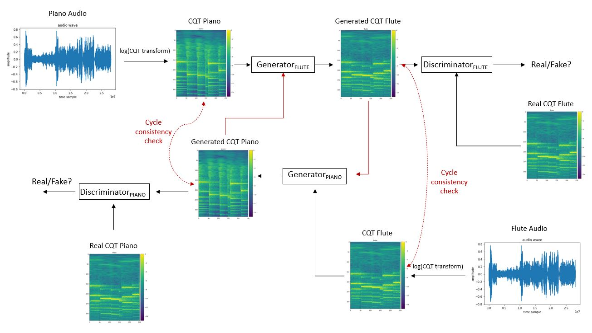

Our vanilla CycleGAN model is inspired by Unpaired Image-to-Image Translation using Cycle-Consistent Adversarial Networks. Special thanks to Aladdin Persson for his detailed discussions on Generative Adversarial Networks. 
Source Audio | Generated by Vanilla CycleGAN
1. Mist Flute Chill Melody
Generated Piano
Source Audio | Generated by TimbreTron
1. Bach Piano
Generated Harpsichord
Website maintained by: Arunothia Marappan / Last updated on: June 3, 2021: / Webpage Style Credits: https://github.com/yenchiah/project-website-template